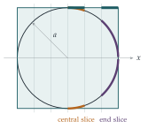

A spherical loaf of bread is cut into parallel slices of equal thickness. Show that, after any number of the slices have been eaten, the area of crust remaining is proportional to the number of slices remaining.
A European ruling decrees that a parallel-sliced spherical loaf can only be referred to as ‘crusty’ if the ratio of volume \(V\) (in cubic metres) of bread remaining to area \(A\) (in square metres) of crust remaining after any number of slices have been eaten satisfies \(V/A < 1\). Show that the radius of a crusty parallel-sliced spherical loaf must be less than \(2\frac23\) metres.
[The area \(A\) and volume \(V\) formed by rotating a curve in the \(x\)–\(y\) plane round the \(x\)-axis from \(x = -a\) to \(x = -a + t\) are given by \[A = 2\pi\int_{-a}^{-a+t} y\left(1 + \left(\frac{\mathrm{d}y}{\mathrm{d}x}\right)^2\right)^{\frac12}\mathrm{d}x, \qquad V = \pi\int_{-a}^{-a+t} y^2\,\mathrm{d}x.\text{]}\]
The hook
Slice a spherical loaf into slices of equal thickness. The slices near the middle are fat discs with a thin band of crust round the edge. The slices near the ends are small caps that seem to be almost all crust. Surely the end slices have more crust?
They don’t. Every slice has exactly the same area of crust, however near the middle or the end it is cut. The thin central band is wide in circumference but nearly vertical; the end cap is small in circumference but slopes steeply, so its crust is stretched over a larger width. The two effects cancel exactly. This is a theorem of Archimedes, and it was so dear to him that he asked for a sphere inside a cylinder to be carved on his tomb. The second part of the question is a lighter-hearted piece of regulation, but it rests on the same calculation.
Before you start
The sphere of radius \(a\) is obtained by rotating which curve about the \(x\)-axis? What is \(\frac{\mathrm{d}y}{\mathrm{d}x}\) for that curve?
Rotating the semicircle \(y = \sqrt{a^2 - x^2}\), \(-a \leq x \leq a\), gives the sphere. Then \(\frac{\mathrm{d}y}{\mathrm{d}x} = \frac{-x}{\sqrt{a^2 - x^2}} = -\frac xy\). Keep that in mind: the slope is steep near the ends (\(x \to \pm a\)) and flat in the middle, which is exactly the effect described in the hook.
Working it through
Stage 1 The crust formula simplifies
Compute \(y\sqrt{1 + (y')^2}\) for the semicircle. Something remarkable happens.
With \(y' = -x/y\), \[1 + (y')^2 = 1 + \frac{x^2}{y^2} = \frac{y^2 + x^2}{y^2} = \frac{a^2}{y^2},\] so \(y\sqrt{1 + (y')^2} = y \cdot \frac{a}{y} = a\), a constant! The crust area between any two planes \(x = x_1\) and \(x = x_2\) is therefore \[2\pi\int_{x_1}^{x_2} a\,\mathrm{d}x = 2\pi a(x_2 - x_1).\] It depends only on the distance between the planes, not on where they are.
Stage 2 Crust is proportional to slices
If the loaf is cut into slices of thickness \(h\), each slice has crust area \(2\pi ah\), the same for all of them. Eat some slices, from one end, from both ends, or from anywhere, and the crust remaining is \(2\pi ah\) times the number of slices remaining.■
Stage 3 The crusty condition
The hint in the question describes the bread that is left when slices are eaten from one end, so follow it: suppose the slices are eaten from the end \(x = a\), so that what remains runs from \(x = -a\) to \(x = -a + t\). A ruling about “any number of slices” should hold however finely the loaf is cut, so we treat \(t\) as able to take any value between \(0\) and \(2a\). (Stage 4 looks at slices eaten from both ends.)
Compute \(V\) using the given formula. A substitution \(s = x + a\) might make the algebra cleaner.
With \(s = x + a\), \(y^2 = a^2 - x^2 = a^2 - (s - a)^2 = 2as - s^2\), so \[V = \pi\int_0^t (2as - s^2)\,\mathrm{d}s = \pi\left(at^2 - \frac{t^3}{3}\right), \qquad A = 2\pi at,\] and \[\frac{V}{A} = \frac{at^2 - t^3/3}{2at} = \frac t2 - \frac{t^2}{6a}.\]
The ruling requires \(V/A < 1\) after any number of slices have been eaten, that is, for every \(t\) with \(0 < t \leq 2a\). What is the largest value of \(\frac t2 - \frac{t^2}{6a}\) on this range?
Differentiating with respect to \(t\): \(\frac12 - \frac{t}{3a} = 0\) at \(t = \frac{3a}{2}\), which is inside the range \((0, 2a]\), and this is a maximum (the expression is a downward parabola in \(t\)). The maximum value is \[\frac{3a}{4} - \frac{9a^2/4}{6a} = \frac{3a}{4} - \frac{3a}{8} = \frac{3a}{8}.\] A crusty loaf needs \(V/A < 1\) for every \(t\), and in particular at \(t = \frac{3a}{2}\), so \(\frac{3a}{8} < 1\), that is, \(a < \frac83 = 2\frac23\) metres.■
Stage 4 Beyond the question: is \(2\frac23\) enough?
The question asks only for a condition the radius must satisfy. Is \(a < \frac83\) also enough? What if the slices are eaten from both ends?
It is not enough. Eating from both ends leaves a band in the middle, and a middle band holds more bread for its crust than a cap at the end. For the band \(-\frac w2 \leq x \leq \frac w2\), \[V = \pi\int_{-w/2}^{w/2} (a^2 - x^2)\,\mathrm{d}x = \pi\Bigl(a^2w - \frac{w^3}{12}\Bigr), \qquad A = 2\pi aw, \qquad \frac VA = \frac a2 - \frac{w^2}{24a},\] which is close to \(\frac a2\) for a thin band. For example, a loaf of radius \(2.4\) metres, comfortably under \(2\frac23\), cut into four slices with the two end slices eaten, leaves the band with \(w = a\) and \(\frac VA = \frac{11a}{24} = 1.1\). In fact \(\frac VA < \frac a2\) for any collection of slices, so if slices may be eaten from anywhere, a loaf is crusty exactly when \(a \leq 2\) metres. The question’s \(2\frac23\) is a correct necessary condition, but the ruling is stricter than the question lets on.
Looking back
Simplify before integrating. The integrand for the crust looked complicated but turned out to be constant. Always simplify an integrand before attacking it.
Read “for any” carefully. The condition had to hold after any number of slices, so we needed the maximum of \(V/A\), not its value for the whole loaf (which is \(\frac a3\)).
A surprising answer from a simple calculation. The equal-crust property sounds implausible, but the calculation is two lines long.
What’s really going on
Archimedes proved, in On the Sphere and Cylinder, that the area of the band of a sphere between two parallel planes equals the area of the band they cut from the cylinder that wraps around the sphere (Figure 4.8.1). Our calculation is this theorem: the cylinder of radius \(a\) has crust area \(2\pi a\) per unit length, and so does the sphere. Taking the whole sphere, its surface area equals that of the cylinder’s curved surface, \(2\pi a \times 2a = 4\pi a^2\). Archimedes regarded this, together with the fact that the sphere has two-thirds the volume of the cylinder, as his finest work. Cicero, visiting Syracuse in 75 BC, found the overgrown tomb by looking for the sphere and cylinder carved on it.

Maps of the Earth
The hat-box theorem gives a way to draw a map of the Earth that preserves area. Project each point of the globe horizontally outwards onto the wrapping cylinder, then unroll the cylinder. Bands of the sphere map to bands of the cylinder of the same area, and the same is true for any region. This is Lambert’s cylindrical equal-area projection (1772). It distorts shapes badly near the poles, but areas are honest, unlike the familiar Mercator projection, which makes Greenland look as big as Africa (it is about fourteen times smaller). A famous theorem of Gauss, the Theorema Egregium (1827), shows that no map of a sphere can preserve both areas and shapes: every flat map of the Earth must distort something.
Random points on a sphere
Here is a practical consequence. To choose a point uniformly at random on a sphere, you might try choosing a latitude and longitude uniformly, but that crowds points near the poles. The hat-box theorem gives the right recipe: choose the height \(x\) uniformly between \(-a\) and \(a\), and the longitude uniformly between \(0\) and \(2\pi\). Because area is proportional to height, this is exactly uniform. Computer simulations in physics and graphics use this method. (Remarkably, it works only in three dimensions: the corresponding statement for spheres in four or more dimensions is false.)
The thinking skill
When a calculation produces something unexpectedly simple, such as a constant, stop and ask why. There is usually a geometric reason, and finding it is where the real understanding lies.
Here the integrand \(y\sqrt{1 + (y')^2}\) was constant because steepness and distance from the axis exactly compensate each other on a sphere: that is Archimedes’ theorem.
Try this next
The whole loaf. Show that for the whole uncut loaf, \(V/A = \frac a3\). Why is the condition in the question harder to satisfy than \(\frac a3 < 1\)?
The tropics. What fraction of the Earth’s surface lies between latitudes \(23.4^\circ\) south and \(23.4^\circ\) north? (Treat the Earth as a sphere. Since area is proportional to height, you only need \(\sin 23.4^\circ\).)
Other shapes. Show that for a loaf in the shape of a paraboloid (rotate \(y = \sqrt x\) about the \(x\)-axis), the crust per slice is not constant. For which curves \(y(x)\) is \(y\sqrt{1 + (y')^2}\) constant? (Solve the differential equation.)
Volumes. Use the volume formula to show that a sphere has two-thirds the volume of its wrapping cylinder, as Archimedes found.
Further reading
Sherman Stein, Archimedes: What Did He Do Besides Cry Eureka? (Mathematical Association of America). Archimedes’ mathematics explained for a modern reader.
Timothy Gowers, Mathematics: A Very Short Introduction (Oxford University Press). The chapter on geometry introduces the geometry of curved surfaces.
John Snyder, Flattening the Earth (University of Chicago Press). Two thousand years of map projections.